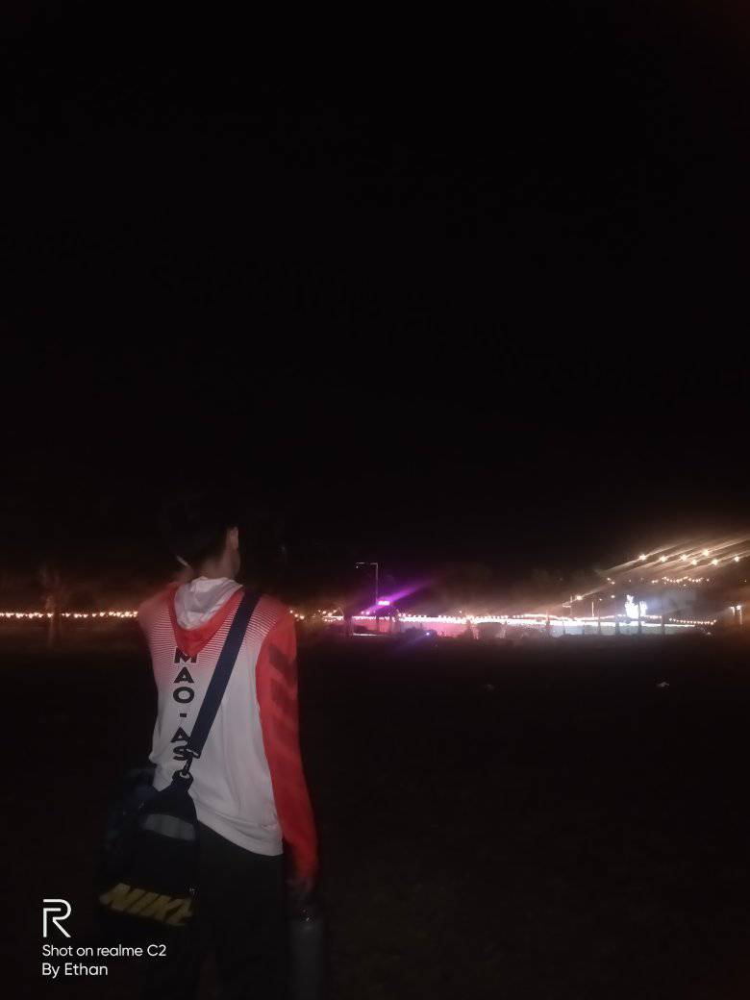
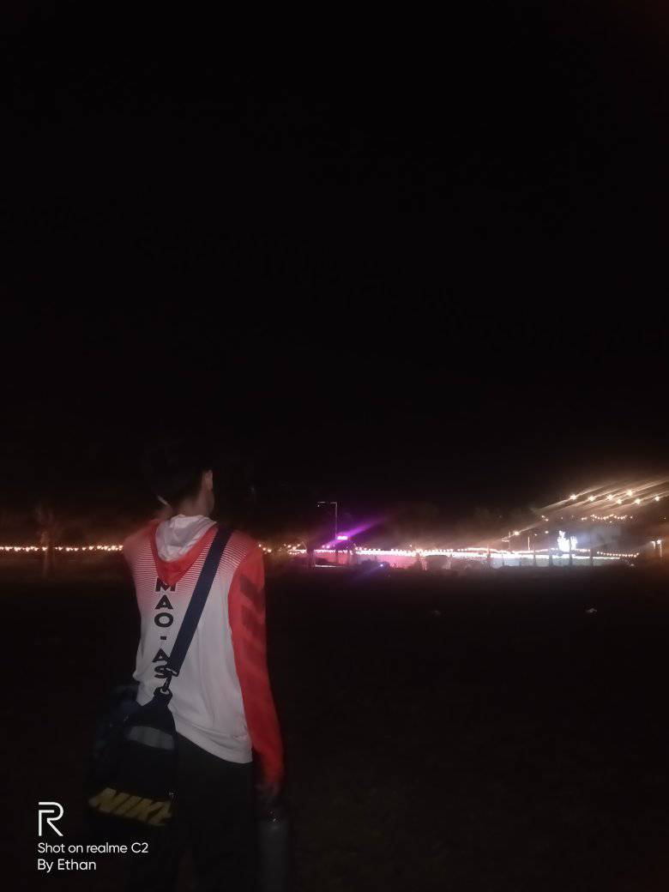

10k Roses
The Philippines' Cebu island province is known for its stunning landscapes, rich cultural heritage, and vibrant communities. The 10,000 Roses of Cordova, a mesmerizing sight, attracts locals and tourists with its unique charm.
 

A Wonderland of Flowers: Situated in the charming hamlet of Cordova, a short drive from Cebu City, is a fanciful garden that has become well-known for its amazing exhibit of artificial LED roses. When the sun sets, this lovely garden comes to life, lighting the surroundings with a mystical radiance that inspires amazement and awe. The 10,000 Roses of Cordova stands as a testament to human creativity and innovation, offering visitors a glimpse into a world of beauty and artistry. Its ethereal charm and captivating allure continue to draw countless visitors seeking to immerse themselves in its enchanting ambiance. A visit to this floral paradise promises an unforgettable experience, leaving an indelible mark on the hearts of all who wander through its radiant blooms.Plan your visit to the 10,000 Roses of Cordova and prepare to be captivated by the sheer beauty and magic that this spectacular garden has to offer!